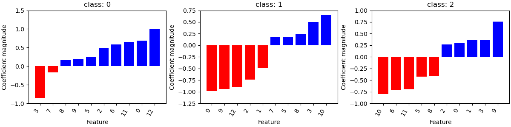

Note
Click here to download the full example code
Model Explanation¶
- 

Out:
Running DummyClassifier(strategy='prior')
accuracy: 0.376 recall_macro: 0.333 precision_macro: 0.125 f1_macro: 0.182
=== new best DummyClassifier(strategy='prior') (using recall_macro):
accuracy: 0.376 recall_macro: 0.333 precision_macro: 0.125 f1_macro: 0.182
Running GaussianNB()
accuracy: 0.962 recall_macro: 0.965 precision_macro: 0.965 f1_macro: 0.963
=== new best GaussianNB() (using recall_macro):
accuracy: 0.962 recall_macro: 0.965 precision_macro: 0.965 f1_macro: 0.963
Running MultinomialNB()
accuracy: 0.948 recall_macro: 0.952 precision_macro: 0.952 f1_macro: 0.950
Running DecisionTreeClassifier(class_weight='balanced', max_depth=1)
accuracy: 0.593 recall_macro: 0.622 precision_macro: 0.455 f1_macro: 0.500
Running DecisionTreeClassifier(class_weight='balanced', max_depth=5)
accuracy: 0.947 recall_macro: 0.945 precision_macro: 0.955 f1_macro: 0.947
Running DecisionTreeClassifier(class_weight='balanced', min_impurity_decrease=0.01)
accuracy: 0.947 recall_macro: 0.945 precision_macro: 0.955 f1_macro: 0.947
Running LogisticRegression(C=0.1, class_weight='balanced', max_iter=1000)
accuracy: 0.985 recall_macro: 0.987 precision_macro: 0.987 f1_macro: 0.985
=== new best LogisticRegression(C=0.1, class_weight='balanced', max_iter=1000) (using recall_macro):
accuracy: 0.985 recall_macro: 0.987 precision_macro: 0.987 f1_macro: 0.985
Running LogisticRegression(class_weight='balanced', max_iter=1000)
accuracy: 0.978 recall_macro: 0.978 precision_macro: 0.981 f1_macro: 0.978
Best model:
LogisticRegression(C=0.1, class_weight='balanced', max_iter=1000)
Best Scores:
accuracy: 0.985 recall_macro: 0.987 precision_macro: 0.987 f1_macro: 0.985
precision recall f1-score support
0 0.88 1.00 0.93 14
1 1.00 0.90 0.95 21
2 1.00 1.00 1.00 10
accuracy 0.96 45
macro avg 0.96 0.97 0.96 45
weighted avg 0.96 0.96 0.96 45
[[14 0 0]
[ 2 19 0]
[ 0 0 10]]
from dabl.models import SimpleClassifier
from dabl.explain import explain
from sklearn.datasets import load_wine
from sklearn.model_selection import train_test_split
wine = load_wine()
X_train, X_test, y_train, y_test = train_test_split(wine.data, wine.target)
sc = SimpleClassifier()
sc.fit(X_train, y_train)
explain(sc, X_test, y_test)
Total running time of the script: ( 0 minutes 0.710 seconds)